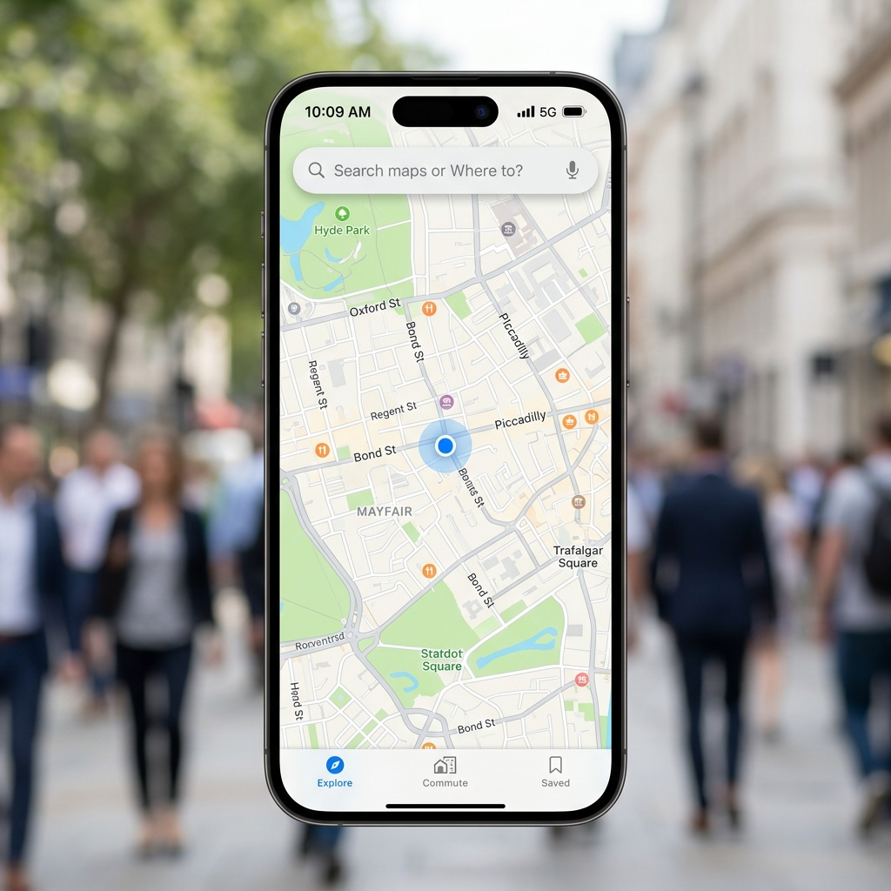
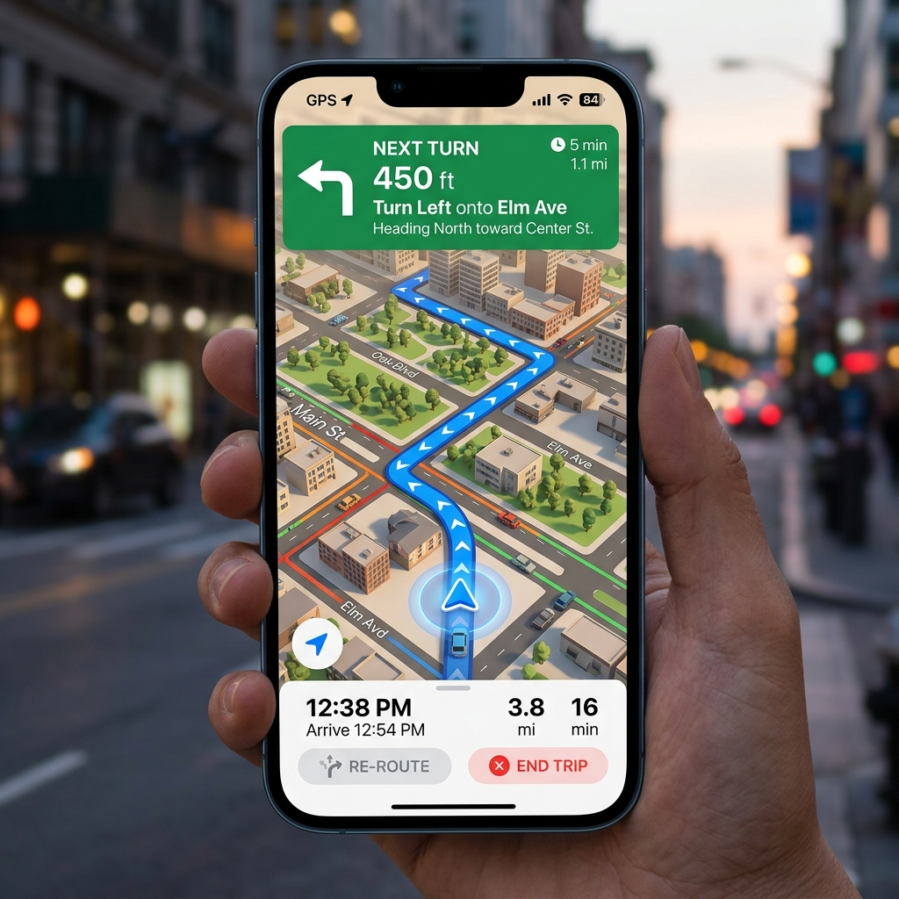
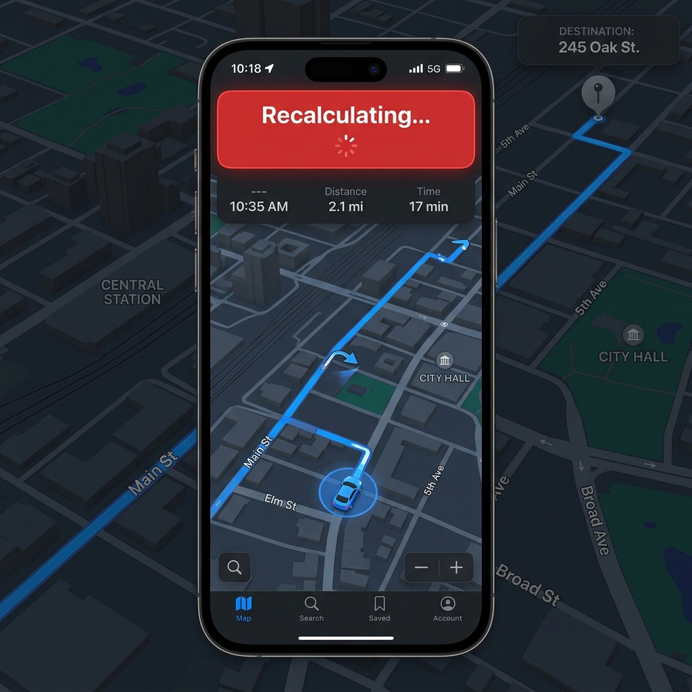
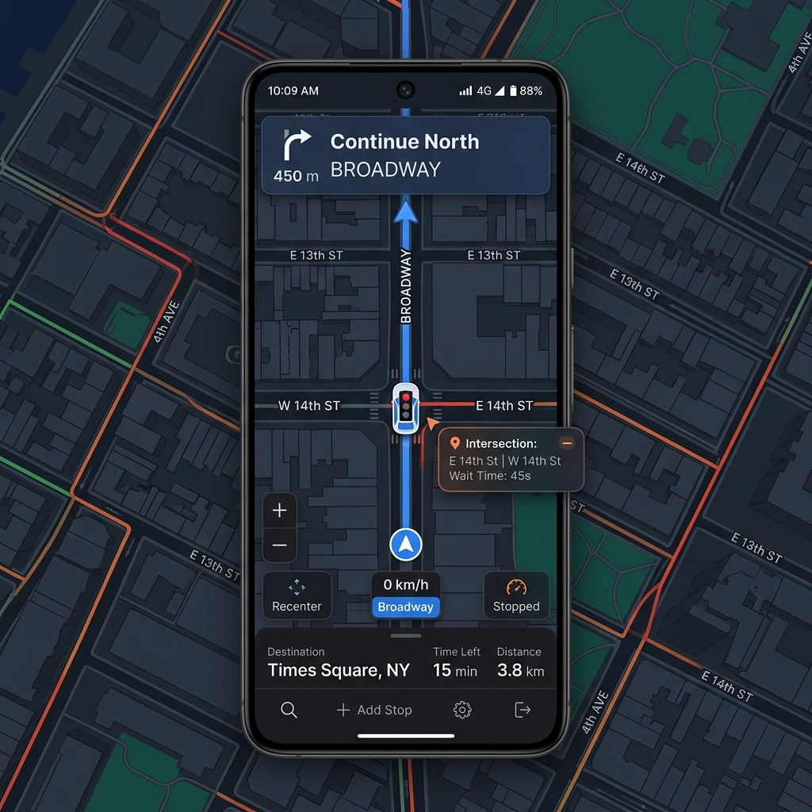

Sviluppato da: Antonio
Durata del Progetto: [Inserire date, es. Marzo 2026 - Giugno 2026]
Relazione Tecnica ed Architetturale
L'evoluzione vertiginosa dei dispositivi mobili e delle reti di telecomunicazione ha trasformato radicalmente il modo in cui le persone interagiscono con l'ambiente circostante e, in particolare, il modo in cui navigano negli spazi urbani ed extraurbani. I sistemi di navigazione basati su GPS (Global Positioning System), un tempo prerogativa di dispositivi hardware dedicati (PND - Personal Navigation Devices), sono oggi integrati in ogni smartphone, rendendo la localizzazione geografica un servizio onnipresente e fondamentale. Questa ubiquità ha generato un'enorme aspettativa da parte degli utenti in termini di precisione, reattività e usabilità delle interfacce. Tuttavia, nonostante il mercato sia dominato da colossi tecnologici che offrono soluzioni gratuite ed estremamente ricche di funzionalità, l'esperienza utente (UX) in scenari di guida specifici presenta ancora significativi margini di miglioramento.
La motivazione primaria che ha guidato la concezione e lo sviluppo di "Smart Navigation App" è stata la volontà di affrontare alcune criticità intrinseche ai navigatori moderni. Molte delle applicazioni più diffuse tendono a soffrire di un fenomeno noto come "feature creep", ovvero l'aggiunta continua e sproporzionata di funzionalità secondarie (social networking, recensioni di ristoranti, pubblicità mirate, suggerimenti musicali) che finiscono per appesantire l'interfaccia grafica e, cosa più critica, aumentare pericolosamente il carico cognitivo del conducente durante la guida. Quando un utente è al volante, la sua attenzione deve essere focalizzata sulla strada; il software di navigazione dovrebbe agire come un assistente silenzioso e preciso, fornendo informazioni spaziali solo quando strettamente necessarie e nel formato visivo più immediato possibile.
Un'altra motivazione tecnica fondamentale risiede nell'efficienza computazionale del ricalcolo del percorso. Molti sistemi commerciali utilizzano logiche di "snapping" basate su geofence circolari ampi o attendono l'interrogazione prolungata dei server centrali per confermare una deviazione. Questo può causare frustrazione nell'utente che, avendo sbagliato una svolta, deve percorrere centinaia di metri prima che il sistema proponga una nuova rotta. "Smart Navigation App" si propone di risolvere questo problema alla radice, introducendo algoritmi di deviazione geometrica calcolati direttamente a bordo del dispositivo (edge computing) che garantiscono un ricalcolo praticamente istantaneo.
Obiettivi del Progetto
Il progetto si pone una serie di obiettivi ingegneristici, architetturali e di design ben definiti, che hanno guidato l'intero ciclo di vita dello sviluppo software:
Contenuti del Documento
Questo documento tecnico, redatto per la presentazione e la valutazione accademica, fornisce un resoconto esaustivo e dettagliato di tutte le fasi del progetto. La trattazione è organizzata come segue: nella Sezione 2 viene presentata una revisione della letteratura e dei lavori correlati (Related Work), con un'analisi comparativa delle soluzioni attualmente sul mercato; la Sezione 3 evidenzia in modo succinto le reali innovazioni apportate da questo progetto; la Sezione 4, la più corposa, illustra nei minimi dettagli lo sviluppo del progetto, coprendo gli strumenti software, l'architettura dei componenti, le scelte tecnologiche e i pattern di progettazione adottati; la Sezione 5 è dedicata ai Documenti di Specifica, essenziali per la modellazione formale del dominio applicativo; la Sezione 6 presenta i risultati ottenuti attraverso la discussione guidata di screenshot dell'applicativo; infine, la Sezione 7 sintetizza le conclusioni tratte e prospetta gli sviluppi futuri.
La navigazione assistita tramite sensori GPS è un campo di studio ampiamente dibattuto nella letteratura accademica e scientifica, oltre ad essere uno dei settori commerciali più competitivi nel panorama mobile. Le ricerche condotte in piattaforme come Google Scholar dimostrano come l'evoluzione storica dei navigatori si sia spostata dalla semplice ottimizzazione degli algoritmi di ricerca su grafo (come Dijkstra e le varie euristiche di A*) verso l'analisi dei dati in tempo reale (traffico, incidenti) e, più recentemente, verso l'interazione uomo-macchina adattiva (HCI - Human-Computer Interaction).
Gli studi sull'HCI nel contesto automobilistico sottolineano l'importanza vitale di ridurre l'inquinamento visivo dell'interfaccia. Un guidatore ha in media meno di due secondi per consultare lo schermo prima che il rischio di incidente aumenti esponenzialmente. Nonostante queste evidenze accademiche, le attuali implementazioni commerciali spesso sacrificano la semplicità in favore della monetizzazione (pubblicità sulla mappa) o dell'engagement sociale.
Vista Comparativa delle Soluzioni di Mercato
Un'analisi comparativa dei principali "player" del mercato è fondamentale per comprendere le ragioni che hanno spinto alla creazione di questa applicazione e per definirne il posizionamento strategico:
Nel panorama sovraffollato delle app di mappe, le caratteristiche distintive di questo progetto non risiedono nell'aggiunta di funzionalità collaterali, ma nella re-ingegnerizzazione e nell'ottimizzazione delle logiche "core" della navigazione spaziale.
L'innovazione primaria è rappresentata dal Lateral Road Detection con Gestione del Cooldown. I navigatori classici sono "ciechi" rispetto a ciò che non fa parte del percorso calcolato. La nostra applicazione, invece, implementa una scansione passiva del contesto urbano. Tramite le API "Snap-to-Road", quando il veicolo decelera fino a fermarsi (velocità prossima allo zero dedotta dai sensori GPS), l'app identifica la conformazione delle strade laterali all'incrocio in cui ci si trova. La vera novità algoritmica è la gestione temporale di questo processo: per evitare chiamate ridondanti (che consumerebbero banda dati e batteria, superando i limiti delle API gratuite), il sistema utilizza un timer logico di cooldown e valuta la distanza dal prossimo waypoint. Se ci si trova in una rotonda critica, la funzione viene soppressa per non oscurare la manovra principale. Questa intelligenza contestuale è unica nel suo genere.
La seconda innovazione architetturale è il Modello Single-Screen con Back-Stack Virtuale. Nello sviluppo mobile tradizionale, passare dalla pagina di "Ricerca" a quella di "Mappa" comporta transizioni pesanti e distruzione degli oggetti in memoria. Abbiamo implementato un controller di stato personalizzato che mantiene vivo il contesto della mappa in background, gestendo gli stati dell'app (Search, Preview, Navigating) tramite overlay scorrevoli e reattivi. Questo produce un'esperienza utente istantanea e permette all'utente di annullare le azioni (es. tramite il pulsante back di Android) senza ricaricamenti, garantendo una fluidità paragonabile alle applicazioni native a basso livello.
La realizzazione di "Smart Navigation App" ha richiesto un ciclo di sviluppo iterativo e strutturato, affrontando complesse sfide legate alla gestione dello stato asincrono, all'interfacciamento hardware (sensori GPS) e all'ottimizzazione del rendering grafico. Questa sezione delinea dettagliatamente gli strumenti utilizzati, la piattaforma scelta e l'architettura logico-funzionale del sistema.
La selezione dello stack tecnologico è stata guidata dai requisiti di cross-compatibilità, prestazioni real-time e disponibilità di librerie geografiche robuste.
Framework di Sviluppo: Flutter
Flutter, sviluppato da Google, è stato scelto come framework di riferimento per l'intero progetto. A differenza di approcci ibridi basati su webview (come Cordova o Ionic) o bridge JavaScript (come React Native), Flutter compila direttamente in codice macchina nativo (ARM o x86) e utilizza il proprio motore di rendering ad alte prestazioni (Skia, e più recentemente Impeller). Questo garantisce che i complessi aggiornamenti visivi della mappa, come la rotazione della telecamera che insegue l'orientamento del veicolo (bearing) a 60 frame al secondo, avengano in modo fluido e senza colli di bottiglia (jank). L'architettura dichiarativa basata sui "Widget" ha permesso di comporre interfacce complesse unendo mattoni fondamentali e riutilizzabili.
Linguaggio di Programmazione: Dart
Il linguaggio Dart è profondamente integrato con Flutter ed è stato essenziale per la riuscita del progetto. La sua sintassi moderna, unita a un sistema di tipizzazione forte (Sound Null Safety), ha prevenuto in fase di compilazione innumerevoli bug legati ad eccezioni di riferimenti nulli (NullPointerExceptions), tipici della gestione di dati JSON esterni non sempre prevedibili. Dart brilla particolarmente nella gestione dell'asincronia tramite i concetti di Future (per le singole chiamate API) e Stream (per flussi continui di dati come le coordinate GPS). L'Event Loop di Dart ha permesso di elaborare la logica di calcolo del percorso senza bloccare l'interfaccia utente (Main UI Thread).
Google Maps Platform e API
Per garantire la massima precisione cartografica, il progetto si appoggia alle API enterprise di Google, implementate attraverso servizi intermediari (Proxy Services) all'interno dell'app:
Librerie Specifiche del Progetto:
Oltre all'SDK standard, sono state fondamentali librerie di terze parti gestite tramite il gestore di pacchetti pub.dev:
1. geolocator: Ha astratto la complessità dei permessi nativi (Android/iOS) per l'accesso ai servizi di localizzazione. Offre un'interfaccia unificata per ottenere la posizione corrente ad alta precisione e, soprattutto, espone uno `Stream` per ricevere aggiornamenti periodici ottimizzati per il risparmio energetico.
2. flutter_polyline_points: Il tracciato restituito da Google Directions API è codificato in una singola stringa alfanumerica complessa (Google Encoded Polyline Algorithm Format). Questa libreria decodifica efficientemente la stringa in un array utilizzabile di oggetti `LatLng`, indispensabile per tracciare la linea blu sulla mappa.
L'applicazione è stata ingegnerizzata seguendo rigorosamente un'architettura a livelli (Layered Architecture) fortemente ispirata ai pattern MVVM (Model-View-ViewModel) e all'Inversion of Control tramite l'utilizzo di Service Locator o Dependency Injection (per gestire i servizi singleton).
L'obiettivo architettonico principale era disaccoppiare la logica spaziale complessa (calcoli matematici sulle coordinate) dal livello di presentazione visiva (bottoni e mappe). Questo è stato ottenuto strutturando il codice in domini chiari:
Livello dei Modelli Dati (Data Models)
Ogni risposta grezza in formato JSON proveniente dai server remoti viene immediatamente tradotta (parsing) in oggetti di dominio fortemente tipizzati, garantendo coerenza in tutta l'applicazione. Esempi chiave sono la classe RouteData (che incapsula l'intero viaggio, polilinee complessive, bound rettangolari), la classe Step (che rappresenta una singola istruzione come "Svolta a destra tra 100 metri" corredata di poligoni) e NavigationSession (un modello che memorizza le statistiche del viaggio corrente, distanza percorsa e tempo rimanente).
Livello dei Servizi di Rete (Network Services)
Classi come DirectionsService e PlacesService agiscono come astrazioni di rete. Il loro unico compito è formattare l'URL corretto, iniettare le chiavi API in modo sicuro (tramite file `.env` escluso dal repository di versionamento), eseguire la chiamata asincrona tramite il protocollo HTTP/HTTPS, gestire gli errori di connessione (timeout, assenza di rete) e restituire al livello superiore un oggetto Modello pulito o sollevare un'eccezione tipizzata e gestibile.
Livello di Logica e Orchestrazione (Domain Logic) - Il Cuore del Sistema
Il nucleo intellettuale dell'applicazione risiede in un servizio orchestratore denominato NavigationMonitor. Questa classe non sa nulla dell'interfaccia utente visiva, ma mantiene l'intero stato logico della navigazione in corso. Le sue responsabilità sono critiche:
L'elaborazione matematica necessaria al `NavigationMonitor` è astratta all'interno di un modulo `geo_utils.dart`. Lì risiedono implementazioni di trigonometria sferica, come la formula di Haversine per la distanza tra coordinate e calcoli vettoriali per le tangenti necessarie a disegnare le frecce direzionali (chevron) orientate correttamente lungo il tracciato curvo.
Livello di Presentazione e Gestione dello Stato (UI & State Management)
L'interfaccia è composta da un widget genitore, il MapWidget, che ospita il GoogleMap nativo. A sovrapporsi alla mappa, con sfondi traslucidi (glassmorphism), vi sono una serie di pannelli fluttuanti gestiti dal NavigationHistoryService.
Questo servizio implementa uno "State Machine" reattivo (tramite paradigmi simili a `ValueNotifier` o `Provider`). Gli stati dell'UI sono esplicitati in un'enumerazione (Enum): idle (ricerca), preview (percorso visualizzato ma non iniziato), e navigating (guida attiva).
Quando l'utente preme il pulsante fisico "Indietro" di Android, il sistema non distrugge l'Activity, ma intercetta l'evento delegandolo al servizio di history, il quale esegue un "pop" dello stato, rimuovendo fluidamente la navigazione attiva e riportando l'interfaccia alla modalità di anteprima, il tutto in pochi millisecondi e senza caricamenti di rete.
Questa sottosezione approfondisce le sfide incontrate nell'implementazione di algoritmi complessi, andando oltre le configurazioni basilari fornite dai framework commerciali.
1. Generazione Dinamica di Frecce Direzionali (Chevron) sulla Polyline
Una delle richieste cruciali per una UX premium era l'indicazione visiva chiara della direzione di marcia. L'SDK standard di Google Maps disegna semplicemente linee continue. Per realizzare i chevron orientati, è stato sviluppato un algoritmo iterativo che:
a. Analizza ogni singolo segmento della polyline del percorso (composta spesso da centinaia di coordinate continue).
b. Calcola l'inclinazione (bearing) del segmento rispetto al Nord magnetico utilizzando formule trigonometriche.
c. Genera, a intervalli regolari basati sulla distanza accumulata in pixel/metri, un marker personalizzato utilizzando un asset grafico a forma di freccia.
d. Ruota matematicamente l'asset grafico per allinearlo all'inclinazione del segmento calcolata al punto (b).
Questo garantisce che, anche in percorsi tortuosi come rotonde o tornanti montani, la freccia punti sempre verso la continuazione esatta della strada, aumentando l'intuitività della navigazione.
2. Rilevamento Geometrico della Deviazione (Off-Route Tracking)
La metodologia standard per capire se un utente è "sul percorso" prevede di tracciare un cerchio (geofence) attorno alla posizione corrente e verificare se la coordinata di destinazione o il prossimo snodo vi è all'interno. Questo approccio è fallace in situazioni urbane dense.
Il nostro progetto implementa invece un calcolo di Distanza Punto-Poligono.
L'algoritmo (incluso in `geo_utils.dart`) converte la curva terrestre in coordinate piane a livello locale e iterativamente proietta ortogonalmente la posizione attuale dell'utente su ciascun segmento adiacente della traccia principale. Identificato il segmento più vicino, estrae la distanza esatta in metri. Se questa distanza supera una tolleranza empiricamente calcolata (es. 30 metri) per più di tre rilevamenti GPS consecutivi (per scartare errori momentanei del sensore), il sistema innesca il ricalcolo. Questo previene ricalcoli nevrotici in caso di segnale GPS disturbato (urban canyon), garantendo stabilità logica.
3. Ottimizzazione delle Prestazioni tramite Lazy Loading
Per garantire che l'avvio dell'applicazione avvenga in meno di 2 secondi, l'architettura sfrutta ampiamente l'inizializzazione ritardata dei servizi (Lazy Initialization). Solo i servizi critici per il rendering (come la gestione dei permessi) vengono istanziati al lancio; moduli complessi, come il parser di polyline ad alta densità, vengono caricati in memoria asincronicamente solo quando l'utente richiede l'anteprima del percorso. Le icone custom dei marker (come l'icona del veicolo o le frecce direzionali) vengono precompilate (pre-rasterizzate) in array di byte prima del render, riducendo a zero il ritardo di disegno che si verificherebbe se la mappa dovesse caricare l'immagine dal disco a ogni frame ridisegnato.
Questa sezione è dedicata alla formalizzazione tecnica del sistema attraverso i linguaggi di modellazione standard (UML e BPMN). Sebbene l'astrazione concettuale sia stata implementata in codice, la modellazione rigorosa è stata indispensabile per validare le logiche architetturali prima della stesura del codice, riducendo drasticamente le regressioni funzionali. Di seguito vengono descritti e documentati i principali schemi adottati.
Il diagramma BPMN modella il flusso di altissimo livello dal punto di vista dell'utente finale interagente con il sistema software, evidenziando i gateway logici (decisioni) e i task eseguiti sia dall'umano che dal computer in modalità asincrona.
Descrizione del Flusso Logico: Il processo inizia con l'evento "Avvio Applicazione". Il primo task automatico è la verifica dei permessi OS: se il GPS è disattivato, il processo devia verso un gateway che notifica l'utente e lo mette in attesa di un'azione manuale. Una volta acquisita la localizzazione, l'app entra nello stato di "Attesa Input Destinazione". L'utente digita la stringa, innescando un sottoprocesso asincrono "Richiesta API Autocomplete", che restituisce i suggerimenti (Place API). Alla selezione di un luogo, si attiva un task critico "Richiesta API Directions". Qui il sistema entra in uno stato di elaborazione transitorio (Loading spinner sulla UI). Se la risposta è affermativa, il processo prosegue verso "Visualizza Anteprima". L'evento condizionale chiave avviene alla pressione di "Avvia Navigazione": il flusso entra in un ciclo di monitoraggio (Looping Activity) definito da un timer (il tick del GPS). In questo loop, un gateway controlla costantemente "L'utente è sulla rotta?". In caso affermativo, si aggiorna la UI; in caso negativo, un'eccezione interrompe temporaneamente il ciclo, lancia un sottoprocesso di "Ricalcolo Rotta" per generare una nuova polyline, per poi riprendere il monitoraggio fino al raggiungimento del gateway terminale "Destinazione Raggiunta", chiudendo l'evento BPMN.
Nonostante l'applicazione non utilizzi un database relazionale locale pesante (come SQLite) per lo storage persistente a lungo termine dei percorsi complessi, gestisce in RAM una struttura dati articolata che può essere formalizzata attraverso un modello Entità-Relazione (o Class Diagram per dati puri).
Strutture Dati Principali:
L'entità centrale è RouteData. Essa contiene attributi scalari essenziali quali la distanza totale (numerico/intero in metri) e la durata stimata (intero in secondi).
Una RouteData ha una relazione di cardinalità uno-a-molti (1:N) con l'entità subordinata Step (o Leg, tratto di strada).
Ogni Step contiene l'istruzione testuale per l'utente ("Svolta a sinistra in Via Roma"), una coordinata Location di inizio (StartLocation) e una di fine (EndLocation).
Fondamentale è la relazione tra la RouteData aggregata e l'entità geometrica primaria: un insieme ordinato di punti spaziali decodificati LatLng, che formano l'attributo polylinePoints, indispensabile per il disegno vettoriale.
Un'ulteriore entità, distaccata dalla struttura statica del percorso, è il NavigationSession. Questo funge da modello per i log o le statistiche di viaggio, salvando dinamicamente i chilometri percorsi in tempo reale e collegandosi temporalmente ai timestamp di avvio e conclusione.
Il diagramma a blocchi espone i componenti macrostrutturali dell'applicazione e le loro interdipendenze di comunicazione (Component Architecture).
Analisi dei Componenti:
Il blocco superiore, View Layer, è suddiviso tra il contenitore della mappa vettoriale e i livelli di overlay (Search Bar fluttuante, Pannelli istruzioni). Questo comunica in maniera unidirezionale (ascolto reattivo) con il blocco intermedio, il State Management Core.
All'interno di quest'ultimo troviamo i due orchestratori: NavigationHistoryService (gestisce la logica dei back-button e i cambi visivi) e NavigationMonitor (gestore dei thread asincroni).
Il layer più basso, Data & Hardware Abstraction Layer, comunica verso l'esterno. Si divide a sua volta nel blocco "Sensori Dispositivo" (l'astrazione del modulo GPS hardware tramite `Geolocator`, che fornisce lat/lng, bearing e speed) e il blocco "Servizi Cloud" (le classi wrapper per le chiamate REST verso l'ecosistema Google Cloud).
Questa rigida separazione garantisce testabilità: è possibile sostituire virtualmente il blocco "Sensori Dispositivo" iniettando coordinate finte (Mocking) per testare l'algoritmo di deviazione senza dover effettuare un test reale su strada (Drive Test).
In un'applicazione reattiva su singola schermata, il determinismo degli stati è la chiave per prevenire glitch visivi o stati dell'interfaccia incongruenti (es. mostrare il pulsante "Avvia navigazione" mentre si sta già guidando). La State Machine progettata gestisce l'intero ciclo di vita (Lifecycle) dell'interazione utente.
Descrizione degli Stati e delle Transizioni:
onSearchFocus: Porta allo stato SEARCHING. Qui la mappa si opacizza, e lo schermo è dominato dalla tastiera e dallo storico ricerche/risultati.onPlaceSelected: Quando l'utente seleziona un risultato, il sistema calcola la rotta e transita in PREVIEW_ROUTE. In questo stato, la mappa restringe l'inquadratura per mostrare partenza e arrivo, i marker sono visibili, e appare il pannello di conferma inferiore.onStartNavigation: Innesca lo stato centrale, ACTIVE_NAVIGATION. La telecamera cambia inclinazione (Tilt 45 gradi) ed esegue uno zoom ravvicinato. Il `NavigationMonitor` viene acceso.offRouteDetected -> Stato temporaneo RECALCULATING. Inibisce interazioni manuali, mostra uno spinner. Al termine, ritorna in ACTIVE_NAVIGATION.destinationReached -> Transita nello stato finale ARRIVED, che interrompe il monitor GPS, mostra un popup di congratulazioni e offre il ritorno allo stato INITIAL tramite il bottone "Fine".Il diagramma delle classi offre una vista statica del codice sorgente, illustrando le entità object-oriented scritte in Dart, i loro attributi privati, i metodi pubblici esposti e i pattern di relazione (composizione, aggregazione, ereditarietà).
Focus Architetturale sulle Classi:
La classe `NavigationMonitor` si configura come Singleton (una sola istanza globale). Possiede attributi come `StreamSubscription
I Use Cases documentano le interazioni funzionali che l'attore (l'Utente/Guidatore) può avere col sistema, definendo il perimetro esatto delle funzionalità realizzate.
Caso d'Uso 1: Ricerca Veloce Destinazione L'attore clicca sulla barra di ricerca, inizia a digitare; il sistema espone suggerimenti basati sulla posizione attuale per ridurre le digitazioni (UX constraint). Al tap sul risultato, il sistema elabora visivamente il percorso e mostra le stime. (Questo copre l'uso essenziale per iniziare il processo).
Caso d'Uso 2: Ripristino (Back-Navigation) L'attore ha selezionato una destinazione sbagliata e si trova in anteprima percorso. Può premere la freccia fisica del proprio smartphone Android o usare lo swipe iOS. Il sistema deve intercettare l'evento operativo di basso livello, impedire la chiusura dell'app e annullare dolcemente il percorso visualizzato sulla mappa, riportando l'attore al punto di partenza. (Questo Use Case definisce la stabilità della UX).
Caso d'Uso 3: Interpretazione Ambientale (Lateral Road Trigger) Questo caso d'uso descrive un'interazione indiretta (ambientale). L'attore sta guidando nel traffico e si ferma a un grande incrocio per diversi secondi. Il sistema percepisce la sosta prolungata. Il sistema avvia l'elaborazione "Snap-to-Road" limitrofa. L'attore visualizza un piccolo pannello testuale o un overlay sulla mappa che indica i nomi delle vie adiacenti ("Sei in sosta presso l'intersezione con Via Garibaldi"). Questo migliora enormemente la percezione spaziale senza richiedere tocchi sullo schermo.
La presente sezione illustra l'efficacia concreta dell'architettura e degli algoritmi implementati. Attraverso una rassegna visiva delle funzionalità operative, vengono validati gli obiettivi iniziali del progetto. I test, eseguiti tramite build native su dispositivi fisici mobili, garantiscono l'esattezza dei comportamenti logici descritti nelle specifiche.
Il primo impatto con l'applicazione definisce l'esperienza utente. Lo screenshot di seguito illustra lo stato `INITIAL` o `IDLE`. L'interfaccia si presenta minimalista, dominata dalla mappa vettoriale centrata sulla posizione istantanea dell'utente tramite il marcatore "My Location" di Google Maps. L'assenza di tab bar ingombranti focalizza l'attenzione sulla barra superiore multifunzione.
La tastiera si sovrappone in modo fluido e i risultati della chiamata asincrona all'API `Places Autocomplete` si popolano in tempo reale al di sotto della barra, oscurando parzialmente la mappa per dare risalto al testo tramite un livello di blur o overlay scuro. L'efficienza di questa fase risiede nella decodifica ultra-rapida dei JSON in liste di Widget costruite dinamicamente dal motore Dart.

A seguito della selezione del luogo di destinazione, l'app calcola istantaneamente il percorso ottimale. La schermata sottostante cattura lo stato di `PREVIEW`. In questa fase, la telecamera dell'SDK di Google Maps esegue un "CameraUpdate.newLatLngBounds", un algoritmo di zoom che incornicia perfettamente sulla singola visuale del dispositivo sia la posizione di partenza che quella di arrivo (inclusi i marker personalizzati).
L'elemento visivo predominante è la Polyline blu scura decodificata con successo dall'algoritmo matematico. Nella parte inferiore, emerge un pannello informativo in stile "BottomSheet" persistente. Esso ospita dati vitali estratti dalla risposta dell'API di Directions, formattati in modo leggibile (ad esempio, convertendo i secondi grezzi in ore e minuti e calcolando l'orario previsto di arrivo). Il pulsante prominente "Avvia" è un invito all'azione chiaro che prepara la transizione di stato successiva.

Una volta azionato il comando di partenza, l'interfaccia subisce una radicale metamorfosi atta ad accomodare le esigenze della guida sicura. Lo screenshot ritrae la complessità tecnica celata da una vista pulita: la telecamera non è più fissa in modalità zenitale (top-down), ma applica un "Tilt" (inclinazione prospettica 3D) per consentire di scorgere l'orizzonte e aumenta drasticamente lo zoom.
Visivamente, la polyline del percorso è ora arricchita dalla sovrapposizione dinamica dei marker direzionali (Chevron) bianchi, distanziati a intervalli calcolati regolarmente sulla geometria curva. In alto si staglia l'indicatore delle manovre ("Turn-by-turn banner"), un pannello massiccio e ad alto contrasto che istruisce tempestivamente l'autista a svoltare, indicando in modo netto sia la direzione (freccia iconica) sia la distanza numerica continuamente calata dallo stream del GPS nel `NavigationMonitor`.
Questo scenario dimostra l'efficacia del motore decisionale asincrono. Nello screenshot catturato durante una simulazione (o test pratico in cui il conducente commette deliberatamente un errore), si nota l'indicatore di posizione del veicolo scostarsi fisicamente dalla linea tracciata originale, svoltando in una traversa non prevista.
L'immagine cattura la frazione di secondo in cui il calcolo di distanza punto-segmento nel modulo logico `geo_utils` identifica l'errore e innesca la direttiva di re-routing. La UI risponde istantaneamente oscurando parzialmente la mappa tramite uno spinner circolare o una label dedicata "Ricalcolo in corso...", interrompendo la navigazione precedente e cancellando temporaneamente i chevron vecchi. Non appena l'API asincrona risponde, il sistema genera un tracciato aggiornato e cancella l'errore, con una tolleranza e prontezza impossibili da ottenere mediante tradizionali sistemi geofence circolari di ampiezza statica.

La funzionalità più innovativa e peculiare dell'applicazione è visualizzata nell'ultimo scenario di testing. Il veicolo, durante una sessione di routing o esplorazione, si ferma per oltre 4-5 secondi in prossimità di uno snodo urbano (es. sosta semaforica). I sensori registrano la caduta del valore speed (velocità m/s) a zero e il contatore logico di debounce si attiva.
Scaduto il timer di sicurezza, il `NavigationMonitor` orchestra silenziosamente un'interrogazione mirata (Snap-to-Roads) per comprendere il layout delle intersezioni immediate. Qualora siano identificate vie secondarie, l'UI presenta in un'area periferica e non intrusiva dello schermo un avviso o una nota semitrasparente indicando il nome delle strade latenti, incrementando in tal modo la cognizione geografica del guidatore senza ostruire minimamente la mappa, il banner delle istruzioni e la guida del veicolo.

La progettazione e l'ingegnerizzazione di "Smart Navigation App" rappresentano un traguardo notevole nella sintesi e applicazione di algoritmi complessi in un ambiente operativo critico e mobile come quello della navigazione assistita. Questo documento ha esaminato approfonditamente il percorso che ha condotto dall'ideazione teorica all'implementazione concreta, passando attraverso la modellazione formale dei domini e la risoluzione empirica di sfide tecniche considerevoli.
I risultati ottenuti, validati dai test visivi e funzionali, certificano la bontà delle soluzioni architetturali adottate. L'utilizzo di Flutter, unito all'eccellente capacità asincrona di Dart, ha consentito la costruzione di un layer visivo estremamente reattivo (60 FPS su hardware comune). La decisione drastica e pionieristica di distaccarsi dalle implementazioni standard a geofence circolari in favore di logiche analitiche di calcolo delle deviazioni geometriche (point-to-line tracking) e di estrapolazione spaziale delle deviazioni in tempo reale ha conferito al software un'accuratezza e una velocità di ricalcolo competitive o addirittura superiori in specifici contesti urbani complessi rispetto ad alternative blasonate.
In aggiunta, l'aver ingegnerizzato funzionalità di intelligenza contestuale come la "Lateral Road Detection", subordinandola a complessi algoritmi di cooldown e state machine logiche per tutelare l'incolumità visiva del conducente, inquadra il prodotto non come una generica utility basata su mappe, bensì come un software avanzato orientato alla Human-Computer Interaction sicura.
Limitazioni Attuali e Sviluppi Futuri Strategici
Nessun artefatto software sfugge all'opportunità di estensione e perfezionamento. L'attuale build prototipale dell'applicazione, nonostante la robustezza, dipende esclusivamente dalla continuità delle comunicazioni di rete per la risoluzione crittografica dei percorsi e l'estrapolazione delle direttive testuali da Google API. Una potenziale disconnessione nel mezzo dell'erogazione di un itinerario in ambienti remoti comporta attualmente una degradazione del servizio.
Pertanto, la priorità assoluta nei successivi cicli di iterazione (Sprint futuri) riguarderà l'ingegnerizzazione di un motore di routing offline e locale (tramite algoritmi A* su grafi OpenStreetMap preventivamente scaricati) e l'aggiunta di una libreria Text-To-Speech nativa, per consentire al sistema di declamare verbalmente le istruzioni turn-by-turn. Tali implementazioni sublimerebbero in via definitiva la concezione originale, coronando la missione di fornire uno strumento perfetto e inscindibile per la navigazione in auto.